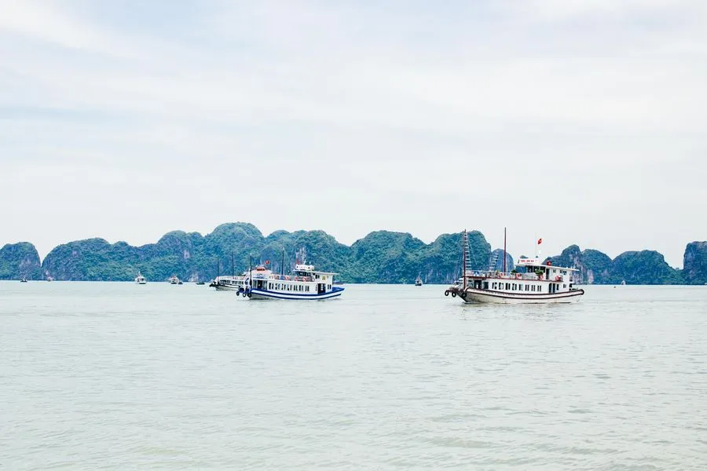
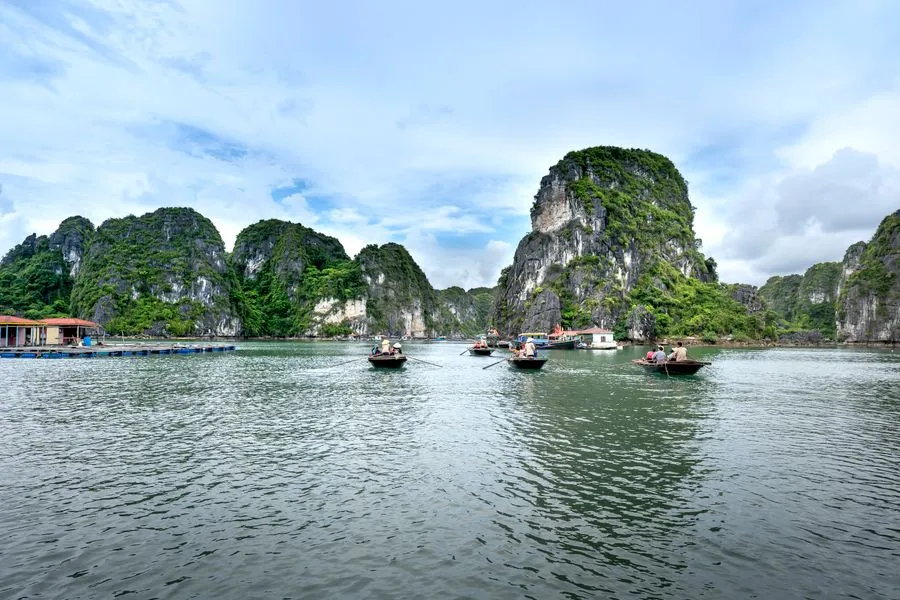
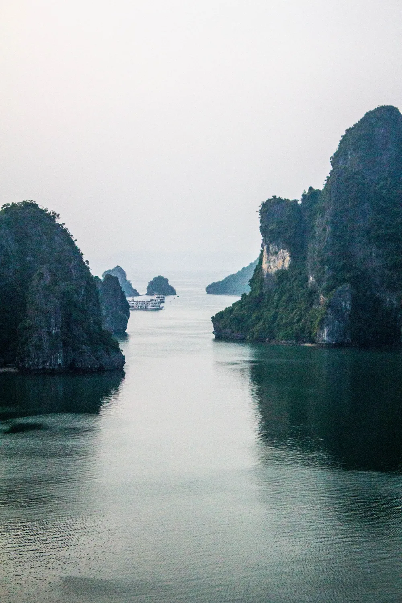

Barcos deslizando entre torres de calcário e lanternas de seda acendendo sobre um rio centenário.
O Vietnã condensa em duas paradas duas das paisagens mais fotografadas do sudeste asiático: a Baía de Ha Long, com quase duas mil ilhas de calcário emergindo da água esmeralda, e Hoi An, cidade antiga que parou no tempo entre lanternas de seda.
É um roteiro que equilibra natureza e cultura sem pressa, navegando de dia e caminhando por ruelas iluminadas à noite, com gastronomia de rua que rivaliza com qualquer restaurante estrelado.
Embarcações tradicionais reformadas, com poucas cabines e mordomo dedicado, navegam devagar entre os pilares de calcário, parando para caiaque em grutas escondidas e para um jantar servido no convés ao pôr do sol. Passar a noite a bordo, ancorado entre as ilhas, é a única forma de ver a baía sem os barcos de turismo do dia.
Toda noite de lua cheia, a cidade antiga apaga a iluminação elétrica e acende milhares de lanternas de seda coloridas, um ritual que atrai a cidade inteira para as margens do rio Thu Bon. Caminhar por essas ruas, entre casas de comerciantes preservadas do século dezoito, é voltar duzentos anos no tempo.
O mercado central de Hoi An abre ao amanhecer e é o ponto de partida para aulas de culinária vietnamita conduzidas por chefs locais, do preparo do phở tradicional aos rolinhos primavera frescos, encerrando com almoço à beira do rio.
A uma hora de Hoi An, as ruínas hindus do reino Champa, entre a selva densa, guardam torres de tijolo com mais de mil anos, muito menos visitadas que os grandes templos do sudeste asiático e igualmente impressionantes ao amanhecer, quando a neblina ainda cobre as árvores ao redor.


